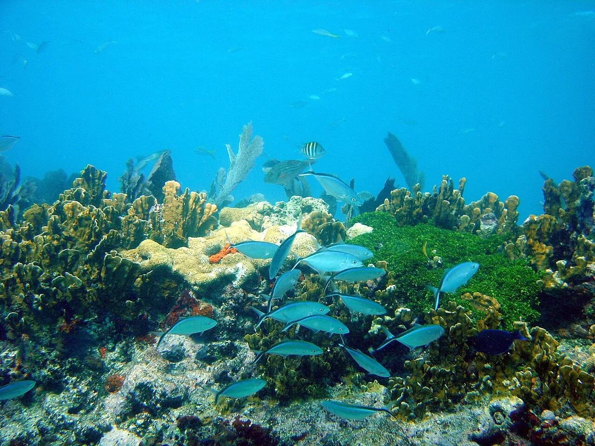

John Pennekamp
Key Largo, Floride, États-Unis · snorkeling, plongée, kayak

Premier parc sous-marin des États-Unis, avec la statue du Christ des Abysses. Récifs et mangroves à explorer.
- Lieu
- Key Largo, Floride, États-Unis
- Niveau
- Débutant
- Activités
- snorkeling, plongée, kayak
- Type d'eau
- Mer / océan
- Coordonnées
- 25.13, -80.41 (position approximative du secteur)
Dangers à connaître
- Orages d’été soudains.
- Corail fragile : toucher ou retirer du corail est interdit dans le sanctuaire.
- Pas de maîtres nageurs : baigne-toi à tes risques.
Le conseil d'Ocean Buddy
Le vrai récif se rejoint en bateau : prends une sortie du parc. Il n’y a pas de maîtres nageurs, donc reste prudent. Prends un pavillon de plongée pour le snorkeling ou la plongée (règle du sanctuaire) et ne touche pas le corail : retirer ou abîmer du corail est interdit.
Ouvrir dans Ocean Buddy Télécharger sur l'App Store
Source : Fiche Ocean Buddy · septembre 2026 · à vérifier localement.